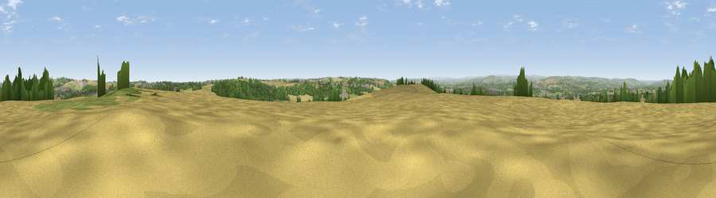

Cobbler's Hill
#9017 in England · top 13% of its area beats it · near High PittingtonThe view, rendered

A 360° render of this exact spot computed from the terrain model, tree cover and land cover — summer colours, afternoon light, calibrated against photographs of famous viewpoints. Real trees, hedges and buildings will differ in detail.
The panorama
Grey silhouette: terrain skyline in each direction (720 bearings, Earth curvature and refraction included). Dashed green: skyline with trees (+15 m) and buildings (+8 m) as obstacles. Blue strip: how far the ground is visible on each bearing.
Where the view opens
Wedge length = distance to the farthest visible ground on that bearing (vegetation-aware). Rings at 10, 25 and 50 km.
What fills the view
51% cropland · 22% grassland · 18% woodland · 9% built-up
Angular shares of the visible panorama (visual magnitude), not map area. Landscape diversity 0.53 (0–1 Shannon).
Key numbers
More beautiful places nearby
The staircase of upgrades: each row has a higher view potential than everything closer. Driving times are estimates from straight-line distance, calibrated against real road routing — check an actual route before setting out.
| Place | Direction | Drive | Score |
|---|---|---|---|
| Lily Hill | ESE · 3 km | ~8 min | 65.6 |
| Viewpoint near Cassop | S · 6 km | ~13 min | 66.3 |
| Viewpoint near Houghton-le-Spring | NNE · 6 km | ~13 min | 72.0 |
| Viewpoint near Houghton-le-Spring | NNE · 6 km | ~13 min | 73.7 |
| Viewpoint near Houghton-le-Spring | NE · 6 km | ~13 min | 76.0 |
| Viewpoint near Sunniside | NW · 17 km | ~30 min | 77.6 |
| Pontop Pike | WNW · 20 km | ~34 min | 77.8 |
| Viewpoint near Lazenby | SE · 36 km | ~54 min | 86.4 |
54.80291, -1.47650 · source: dobih hill · position refined by local search. Computed location — check access rights before visiting.